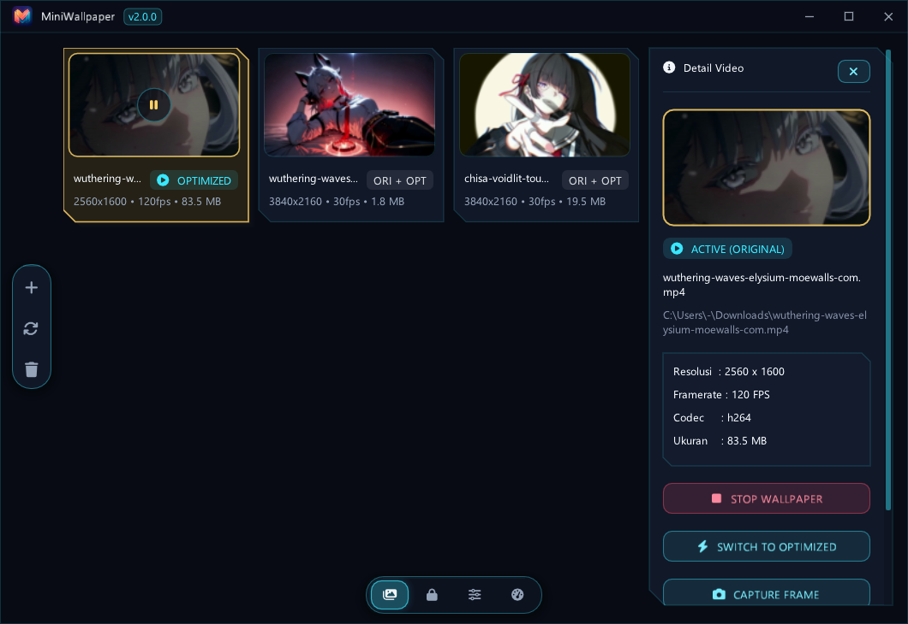
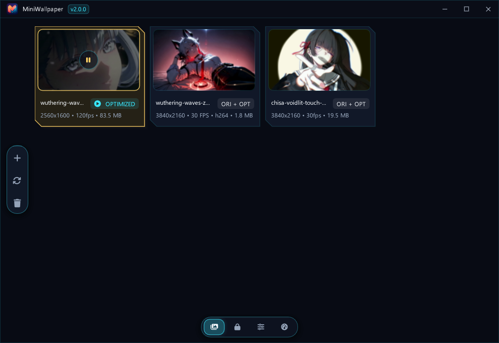
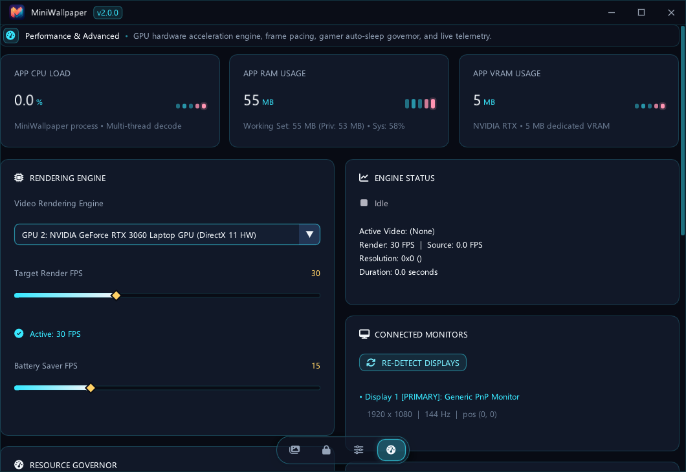

Engine wallpaper video teringan di Windows. Memanfaatkan decoding GPU ASIC murni (D3D11VA), manajemen memori mimalloc zero-purge, dan penundaan DLL startup. Bebas Chromium, hemat baterai, dan nol kompromi untuk performa gaming.

Didesain dari baris pertama untuk efisiensi ekstrim tanpa membebani sistem saat bekerja maupun bermain game.
Stream video didekode langsung di chip hardware GPU (NVDEC / Intel QSV / AMD VCN) via D3D11 Texture2DArray SRV tanpa penyalinan CPU-ke-GPU.
Secara otomatis memprioritaskan Integrated GPU (iGPU) hemat daya untuk rendering, membiarkan discrete GPU (NVIDIA/AMD) tetap berada pada status deep sleep 0%.
Otomatis pause instan saat game fullscreen aktif. Mengaktifkan Deep Sleep (0% CPU, 0 MB VRAM) saat RAM atau VRAM sistem mencapai ambang batas (>= 80%).
Startup Windows tetap cepat berkat 9 DLL berat (FFmpeg & D3D11) yang berstatus delay-load. Wallpaper statis tampil detik ke-0, engine aktif saat CPU tenang.
Ekstrak snapshot frame video secara presisi dan sinkronkan ke Lock Screen Windows serta companion screensaver native MiniWallpaper.scr.
Pre-scaler bawaan yang mengonversi video 4K/bitrate tinggi menjadi format hardware 1080p NV12 yang menghemat daya hingga 75%.
Data pengujian resmi langsung dari Task Manager (Working Set - Private) pada video 1080p 60 FPS di Windows 11.
| Metrik Operasional | MiniWallpaper v2.0.0 | Lively Wallpaper (WPF/WinUI) | Wallpaper Engine | Status Pengujian |
|---|---|---|---|---|
| RAM (Background Daemon) | 0.36 MB | 65.0 - 120.0 MB | 50.0 - 95.0 MB | Hemat hingga 99% memori |
| RAM saat Windows Logon | 0.21 MB (38 modul) | 80.0 - 150.0 MB | 60.0 - 110.0 MB | 0.00 MB Disk I/O saat boot |
| Beban CPU Rata-Rata | 0.00% - 0.20% | 1.20% - 4.50% | 0.80% - 2.50% | SetWinEventHook tanpa polling |
| Jumlah Thread Aktif | 23 threads | 48 - 72 threads | 35 - 55 threads | Arsitektur multi-thread efisien |
| Teknologi Runtime | Native C++20 / Direct3D 11 | .NET 8 / WPF / Chromium | Custom Engine / CEF Web | Zero runtime dependencies |


Tidak membutuhkan instalasi rumit. Sepenuhnya portabel dan siap dijalankan dalam hitungan detik.
Unduh arsip portable terbaru (MiniWallpaper-Portable-...-win64.zip) dari halaman GitHub Releases. Ekstrak seluruh isi file ZIP ke folder permanen pilihan Anda (contoh: D:\MiniWallpaper\).
Klik dua kali MiniWallpaper.exe. Ikon aplikasi akan langsung aktif di System Tray taskbar (samping jam).
Klik kanan ikon tray -> Control Panel, atau buka jendela aplikasi. Anda cukup drag & drop berkas video (MP4, WebM, MKV, MOV) ke galeri untuk langsung menjadikannya wallpaper hidup.
Solusi cepat untuk kendala umum yang sering ditemui pengguna.
Engineered using pure ISO C++20, Direct3D 11, HLSL FXC precompiled shaders, and mimalloc memory allocator. Zero webview, zero node.js runtime, zero telemetry.